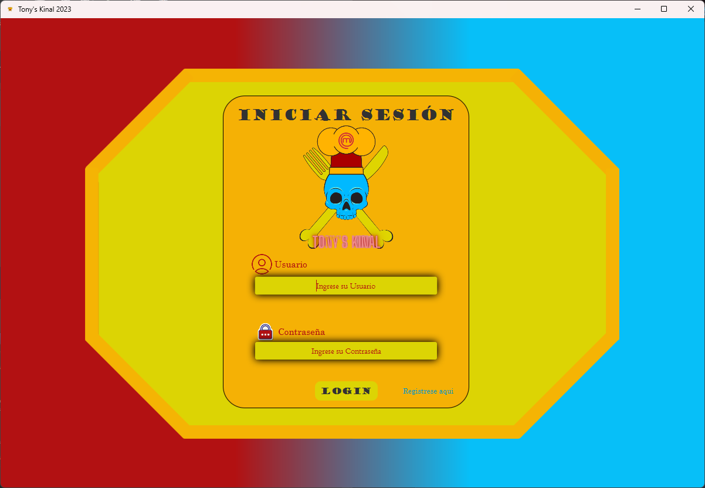
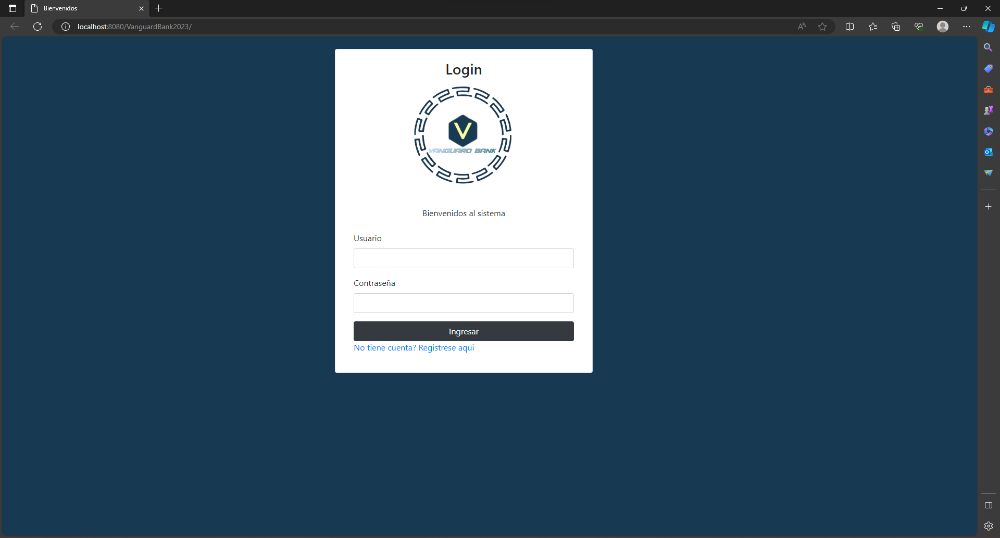

Proyectos
Tony's Kinal
Este proyecto esta basado en un restaurante el cual ofrece distintos platillos y ofrece sus servicion
para actividades como buffets, cumpleaños etc. cuenta con un metodo CRUD
en el cual nos permite la facilidad de agregar y eliminar datos al igual que nos ofrece la posibilidad
de crear una cuenta si no contamos con una y un login.

Vanguard Bank
Este proyecto esta echo para un banco en el cual esta diseñado para los clientes y los empleados los
cuales los empleados tienen privilejios los cuales son el uso del CRUD
y poder ver las actividades de cada usuario, este trabajo fue diseñado con un grupo de trabajo de 11
personas las cules cada uno tenia un rol importante en el trabajo.
